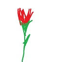

. .
>
⌣
| Student 1 | Student 2 | Student 3 | Student 4 | Student 5 | |
|---|---|---|---|---|---|
| Projekt 1 | 5.0 | 4.5 | 4.0 | 3.5 | 5.5 |
| Projekt 2 | 3.5 | 2.0 | 3.5 | ||
| Projekt 2 poprawa | 3.0 | ||||
| Projekt 3 etap 1 | 5.0 | 3.5 | 5.0 | ||
| Projekt 3 etap 2 | 5.5 | 2.0 | 5.5 | ||
| Projekt 3 poprawa | 3.5 | ||||
| Średnia | 4.75 | 3.4 | 3.0 | 2.91 | 4.875 |
Średnia Studenta 1
Średnia Studenta 2
Średnia Studenta 3
Średnia Studenta 4
Średnia Studenta 5
| A | <HEADER> | B | ||
|---|---|---|---|---|
| C | D | E | @ | |
|  | F | |||
| G | H | I | ||
| J | K | dasdas | L | |